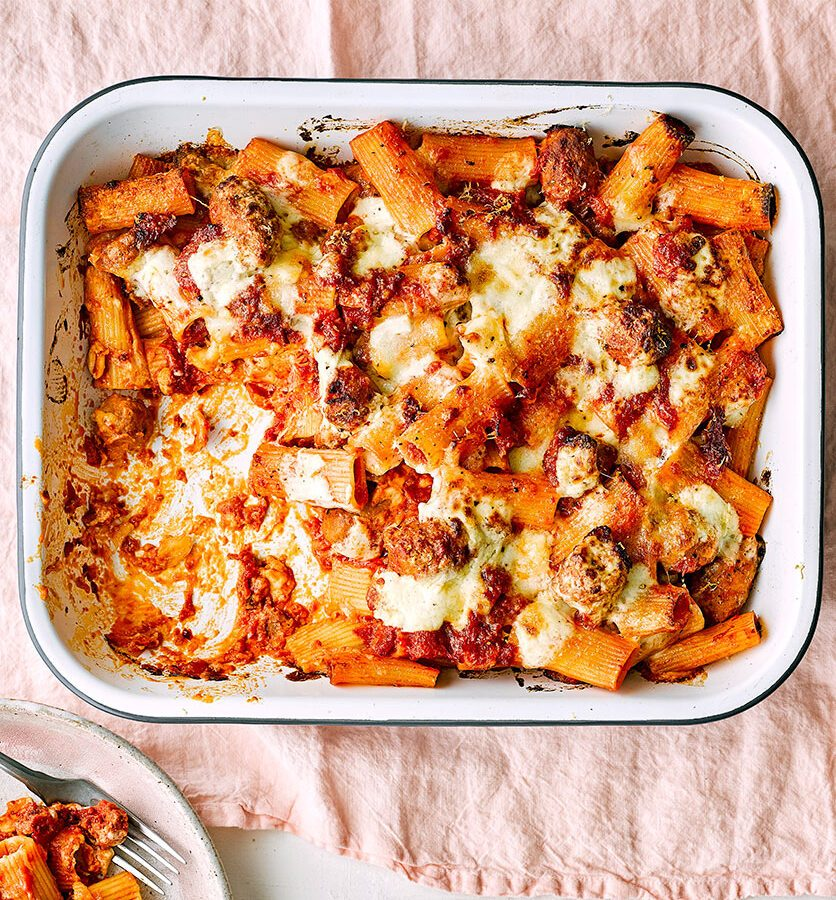
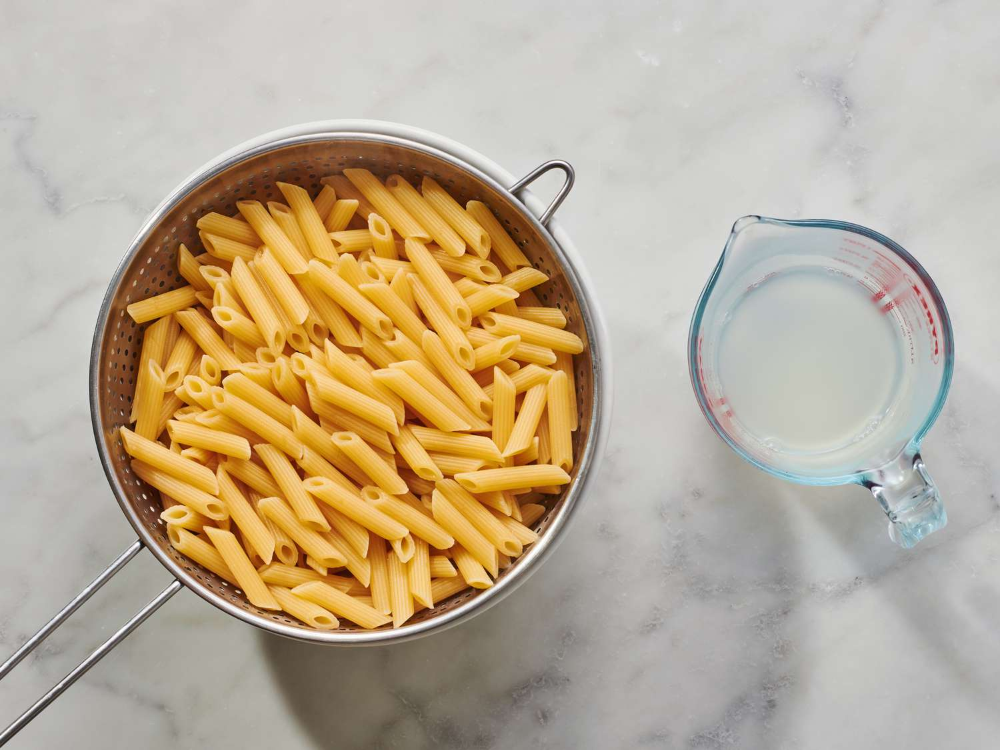
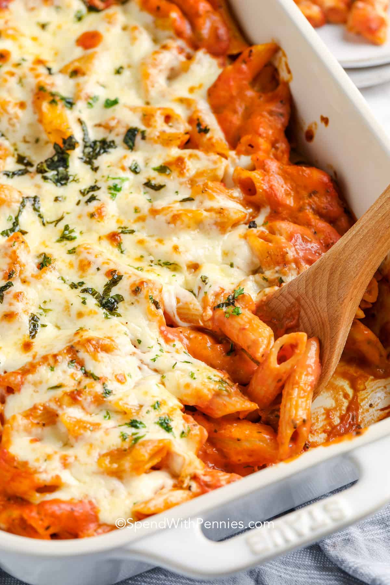

Pasta Bake

Description
This creamy pasta bake is one of my favorite midweek pasta dishes. My whole family loves it, and there is not much prep. Once the pasta bake is in the oven, you can make a salad or set the table, and then it's time to eat.
Ingredients

- 1 (16 ounce) package penne pasta
- 1 tablespoon olive oil
- 3 cloves garlic, minced
- 3 (6 ounce) cans tomato sauce
- 2 tablespoons tomato paste
- 3/4 cup heavy whipping cream
- 1/2 cup grated parmesan cheese
- 1 pinch white sugar
- salt and freshly ground black pepper
- 1 pound cherry tomatoes, halved
- 1 1/4 cups shredded mozzarella cheese
- 1 small bunch fresh basic, finely chopped
Steps

- Gather the ingredients. Preheat the oven to 400 degrees F (200 degrees C). Grease a baking dish.
- Bring a large pot of lightly salted water to a boil. Add penne and cook, stirring occasionally, until tender yet firm to the bite, about 11 minutes. Drain, reserving 1 cup cooking water.
- Heat olive oil in a large skillet over medium heat. Cook onion in oil until soft and translucent, about 5 minutes. Add garlic and cook for an additional 30 seconds.
- Stir in tomato sauce and tomato paste and cook until slightly reduced, about 5 minutes.
- Add cream and Parmesan cheese. Season with sugar, salt, and pepper.
- Stir some of the reserved pasta water into sauce and add cooked penne.
- Remove from the heat and stir in cherry tomatoes, 1/2 of the mozzarella cheese, and basil. Add more pasta water if needed to reach desired consistency.
- Pour penne mixture into the prepared baking dish and cover with remaining mozzarella cheese.
- Bake in the preheated oven until bubbly and cheese is melted, about 20 minutes.